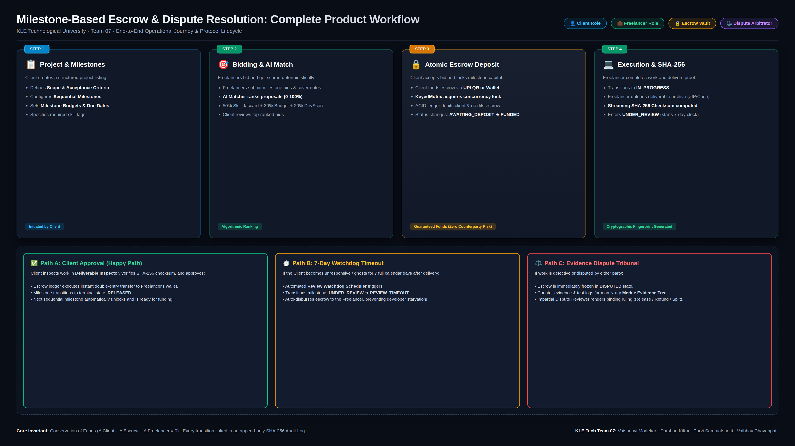
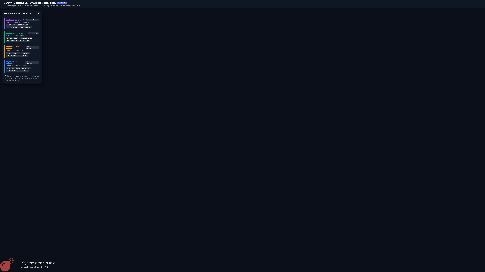
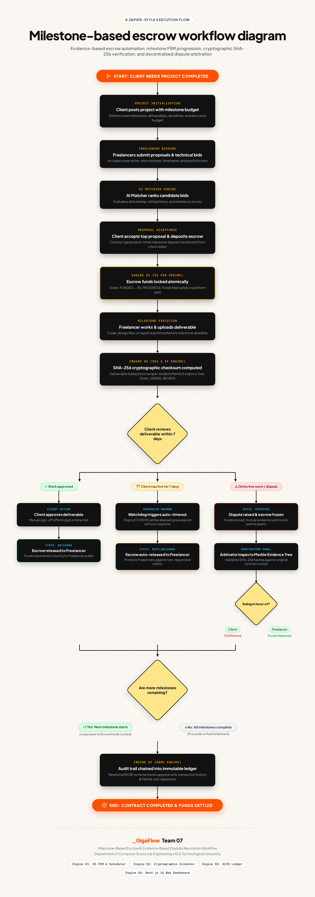

The platform eliminates counterparty risk in gig software marketplaces using an integrated four-engine architecture. It enforces three inviolable mathematical and computer science invariants:
Figure 1 depicts the complete operational user journey, tracking state transitions from project listing and AI heuristic proposal matching to escrow fund locking, deliverable verification, and final ledger settlement.

AWAITING_DEPOSIT $ o$ FUNDED). Freelancer accepts and begins work (IN_PROGRESS). Freelancer submits deliverable with streaming SHA-256 digest (SUBMITTED). Client reviews and clicks "Approve" $ o$ Engine 01 FSM transitions milestone to RELEASED $ o$ Engine 03 atomically debits Escrow Vault and credits Freelancer balance.REVIEW_TIMEOUT $ o$ automated escrow release occurs, eliminating payment starvation.DISPUTED state, freezing escrow. Both parties submit counter-evidence hashed into the in-memory Merkle EvidenceTree. A double-blind reviewer inspects artifacts and issues a binding release, refund, or split settlement committed to the chained audit log.Figure 2 illustrates the modular monolithic architecture where each academic engine exposes strict public interfaces, interacting via internal message contracts while persisting state through serialized SQLite Write-Ahead Logging (WAL) transactions.

| Engine & Lead | Responsibilities | Key Methods & Invariants |
|---|---|---|
| OS Engine 01 Vaishnavi Modekar |
Escrow FSM state validation, KeyedMutex critical sections, review timeout scheduling. | validateTransition(state, action, role)KeyedMutex.runExclusive(key, fn)Invariant: 0 illegal state jumps |
| DSA Engine 02 Darshan Kittur |
Streaming SHA-256 digests, in-memory N-ary Merkle EvidenceTree, heuristic matching. | generateChecksum(buffer)verifyTreeIntegrity(disputeId)Invariant: Single-bit tamper detection |
| DBMS Engine 03 Purvi Sammatshetti |
Relational BCNF models, serialized ACID double-entry ledger, append-only audit log. | releaseMilestoneEscrow(tx, id)appendAuditLog(actor, action, hash)Invariant: $sum Delta ext{Balance} = 0$ |
| WEB Engine 04 Vaibhav Chavanpatil |
Responsive role dashboards, server-side RBAC enforcer, 5s real-time state poller. | enforceRbac(session, role)pollMilestoneState(contractId)Invariant: Non-bypassable server authorization |
Figure 3 depicts the clean, linear decision pipeline matching user-facing specifications, with side-by-side technical step mapping.

AWAITING_DEPOSIT $ o$ FUNDED). Zero double-spending.SUBMITTED.RELEASED $ o$ funds transfer atomically to Freelancer wallet.REVIEW_TIMEOUT $ o$ auto-payout executes to prevent starvation.DISPUTED state. Reviewer evaluates Merkle EvidenceTree & issues binding ruling.prisma/schema.prisma, Contract enforces foreign keys clientId and freelancerId. Queries enforce strict tenant predicate filters (WHERE freelancer_id = session.userId). Client A cannot view or mutate Client B's contract data.KeyedMutex. Mutex keys are keyed strictly by milestoneId. Client A operations acquire milestone:m1-A, while Client B operations acquire milestone:m2-B. Parallel threads execute concurrently without contention.UPDATE users SET balance_paise = balance_paise + :amt WHERE id = :fId. Transactions acquire resources in strict global canonical order (Contract → Milestone → User → AuditLog). By Coffman's Fourth Condition (Circular Wait Elimination), deadlock is mathematically impossible."
REVIEW_TIMEOUT and auto-releasing escrow.[status, reviewDeadline]) every 60 seconds. When $t_{ ext{current}} ge t_{ ext{deadline}}$, the software interrupt executes automatically, ensuring the freelancer is paid without client starvation."
OVERDUE. The client acquires exclusive rights to invoke REFUND_ESCROW. The escrow vault debits and the client balance credits. The freelancer receives ₹0.devScore, reducing their match rankings across competing proposal queues.| Developer Tier | DevScore | Formula Evaluation | $K_{max}$ (Max Active Contracts) | Academic Rationale |
|---|---|---|---|---|
| Novice / Unproven | $0 - 24$ | $lfloor 4 imes 0.20 floor + 1 = 0 + 1$ | 1 Project | Zero track record. Must prove reliability on 1 milestone before scaling. |
| Junior / Developing | $25 - 49$ | $lfloor 4 imes 0.40 floor + 1 = 1 + 1$ | 2 Projects | Moderate confidence. Capable of handling 2 concurrent milestones. |
| Established Mid-Level | $50 - 74$ | $lfloor 4 imes 0.65 floor + 1 = 2 + 1$ | 3 Projects | Demonstrated reliability with $ge 90%$ on-time milestone delivery. |
| Senior Contractor | $75 - 99$ | $lfloor 4 imes 0.90 floor + 1 = 3 + 1$ | 4 Projects | Seasoned developer capable of multi-threading parallel workloads. |
| Elite Perfection | $100$ | $lfloor 4 imes 1.00 floor + 1 = 4 + 1$ | 5 Projects | Top 1% contractor with verified 100% on-time record and 0 dispute faults. |
This matrix arms Team 07 with definitive, curriculum-aligned counter-arguments against the six most aggressive examiner trap questions.
| Examiner Trap Angle | Vulnerability Under Test | Academic Core Principle | Knockout Engineering Defense |
|---|---|---|---|
| 1. Abandonment of Project A | Resource Starvation & Capital Deadlock | OS Expiry Watchdogs & Dynamic DevScore Decay | Every milestone enforces a strict dueDate. Passing it transitions to OVERDUE, unlocking unilateral client refund rights. Freelancer's devScore plunges algorithmically. |
| 2. Wallet Penalty Deductions | Negative Balance & Unsecured Credit | Double-Entry Conservation ($sum Delta B = 0$) | Enforces $ ext{balance} ge 0$. Deducting from an empty wallet creates synthetic unbacked money. Penalty is 100% sunk-labor forfeiture, not illegal property seizure. |
| 3. Arbiter Compensation Bias | Regulatory Capture & Frivolous Disputes | Game Theory & English Loser-Pays Rule | Claimants stake a mandatory arbitration deposit. Losing party forfeits deposit to compensate arbiter. Arbiter fee is fixed per case; reviewer has zero wallet access. |
| 4. Multi-Account Cap Bypass | Sybil Attack & Identity Fragmentation | BCNF Unique Constraints & Super-Linear Matching | Vendor payout profiles require unique verified PAN/Tax ID and GitHub OAuth. Splitting into Sybil accounts fragments reputation, reducing bid acquisition probability. |
| 5. Cascading Pipeline Delays | Pipeline Deadlock & Cross-Blocking | DAG Topological Sorting & Relative Clocks | Milestones form a DAG. Downstream delivery clocks start relative to upstream completion ($T_{ ext{start}} = T_{ ext{completion}}$). Escrow sub-pools are completely segregated. |
| 6. TOCTOU Race Condition | Last-second dispute at exact timer tick | KeyedMutex Serialization & Atomic FSM Guard | Both Watchdog tick and Client dispute endpoint must acquire KeyedMutex(milestoneId). State transitions validate atomically inside single serialized ACID transaction. |
When the evaluator points to any team member, speak with this exact academic assignment:
| Student Lead | Engine Ownership | Core Academic Terminology | The Knockout Sentence to Open With |
|---|---|---|---|
| Vaishnavi Modekar (SRN: 02FE24BCS060) |
Engine 01 Operating Systems |
Finite State Machine, KeyedMutex, Watchdog Interrupt, Banker's Algorithm | "We model contracts as isolated OS processes; KeyedMutex serializes critical sections in memory while the Watchdog scheduler prevents starvation." |
| Darshan Kittur (SRN: 02FE24BCS053) |
Engine 02 DSA & Software Eng |
SHA-256 Hasher, Merkle EvidenceTree, Jaccard Similarity, Interval Graphs | "A single flipped bit invalidates the Merkle root; our O(V+E) bottom-up tree traversal pinpoints the exact corrupted file in under 2ms." |
| Purvi Sammatshetti (SRN: 02FE24BCS022) |
Engine 03 Database Management |
BCNF Normalization, ACID Ledger, $sum Delta B = 0$, Hash-Chained Audit | "Money is neither created nor destroyed: every balance delta balances to zero, and every audit log entry is cryptographically linked with SHA-256." |
| Vaibhav Chavanpatil (SRN: 02FE24BCS013) |
Engine 04 Web Technologies |
Server-Side RBAC, HMAC Token Integrity, 5s Poller, Double-Blind UI | "UI tabs are visual conveniences; every single API route enforces server-side RBAC and HMAC session verification, rejecting spoofing with HTTP 403." |